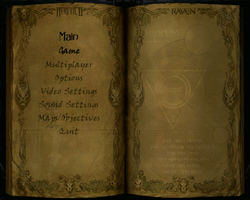
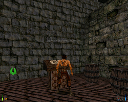
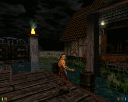

Heretic II
Dieser Artikel wurde für die folgenden Ubuntu-Versionen getestet:
Dieser Artikel ist mit keiner aktuell unterstützten Ubuntu-Version getestet! Bitte diesen Artikel testen und das getestet-Tag entsprechend anpassen.
Zum Verständnis dieses Artikels sind folgende Seiten hilfreich:
Heretic II ist ein Spiel in dem der Spieler in die Rolle von Corvus schlüpft, welcher ein Heilmittel gegen die in seiner Heimatstadt wütende Seuche finden soll. Seine Suche führt ihn in entlegene Regionen seiner Heimat. Mit Magie und Waffen weiß Corvus sich den Gefahren entgegen zu stellen. Das Third-Person-Actionspiel setzt auf eine modifizierte Quake 2-Engine.
|  |  |  |
| Hauptmenü | Tutorial | Spielszene |
Installation¶
Zur Installation [1] legt man die CD-ROM ins Laufwerk und lädt den aktuellen Installer von liflg.org 
 herunter. Nachdem man die Ausführrechte [2] gesetzt hat startet man die Installation [2] [3]:
herunter. Nachdem man die Ausführrechte [2] gesetzt hat startet man die Installation [2] [3]:
./heretic.2_1.06c-english_x86.mojo.run
Über "Anwendungen -> Spiele -> Heretic 2" kann das Spiel anschließend gestartet werden.
Demo¶
Eine Demoversion des Spiels kann nach dieser Anleitung installiert werden.

Infobox¶
| Heretic II | |
| Genre: | Third-Person-Actionspiel |
| Sprache: |  |
| Veröffentlichung: | 1998 |
| Publisher: | Activision, Inc. |
| Systemvoraussetzungen: | Pentium 166 MHz mit 3D-Grafikkarte oder Pentium 233 MHz+, 32+ MB RAM, 260 MB Festplattenplatz, |
| Medien: | CD (1) |
| Strichcode / EAN / GTIN: | 68952471474 |
| ISBN | 1928922090 |
| Läuft mit: | nativ |
- Erstellt mit Inyoka
-
 2004 – 2017 ubuntuusers.de • Einige Rechte vorbehalten
2004 – 2017 ubuntuusers.de • Einige Rechte vorbehalten
Lizenz • Kontakt • Datenschutz • Impressum • Serverstatus -
Serverhousing gespendet von